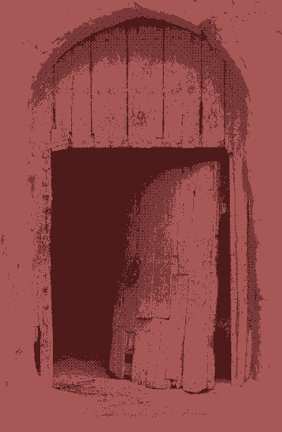

La puerta del faro está abierta, y te cuesta decidir si eso te tranquiliza o no

No sin dificultades, consigues llegar hasta la puerta del faro. El color rojo de la pintura ha perdido su brillo, y en partes ha dejado paso a una madera oscura, sólida.
Una estrella fugaz cae solitaria sobre el mar, y decides que es una señal.